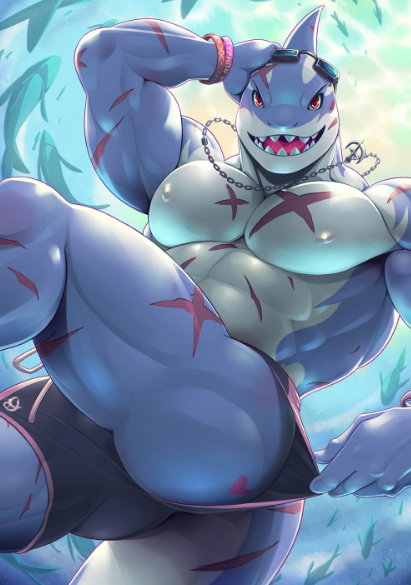
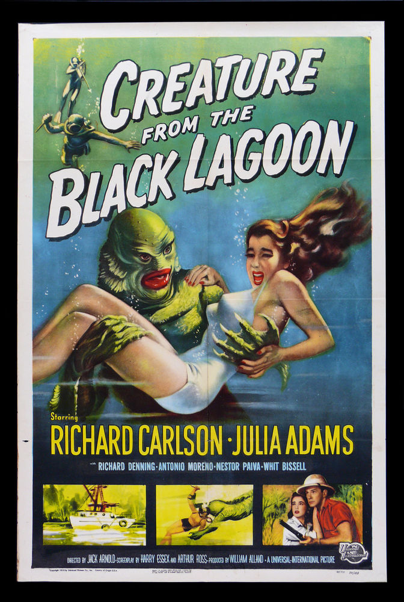
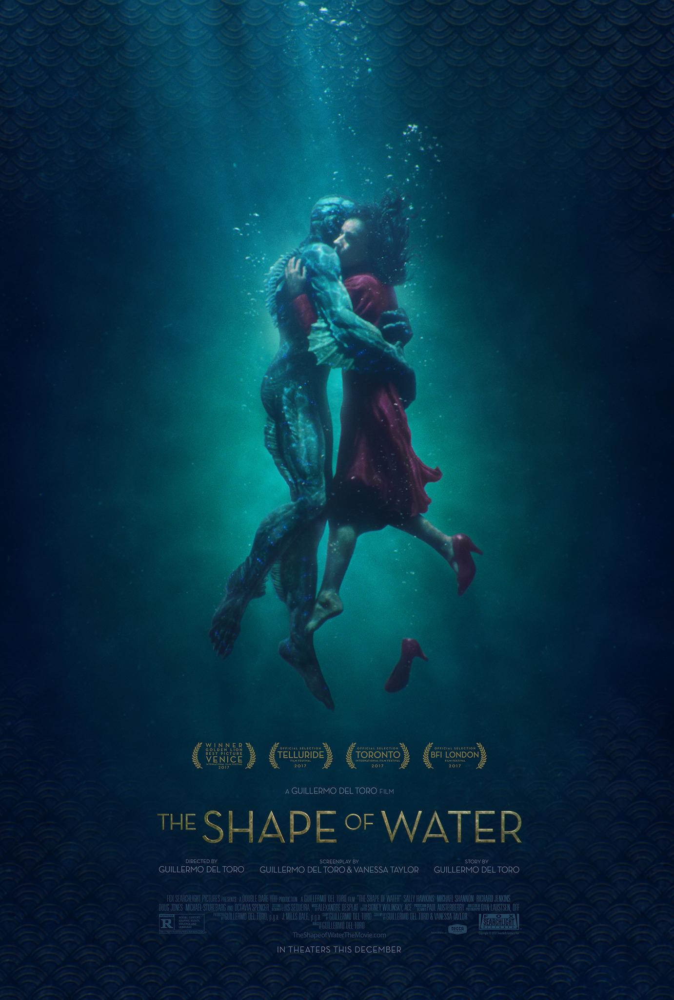
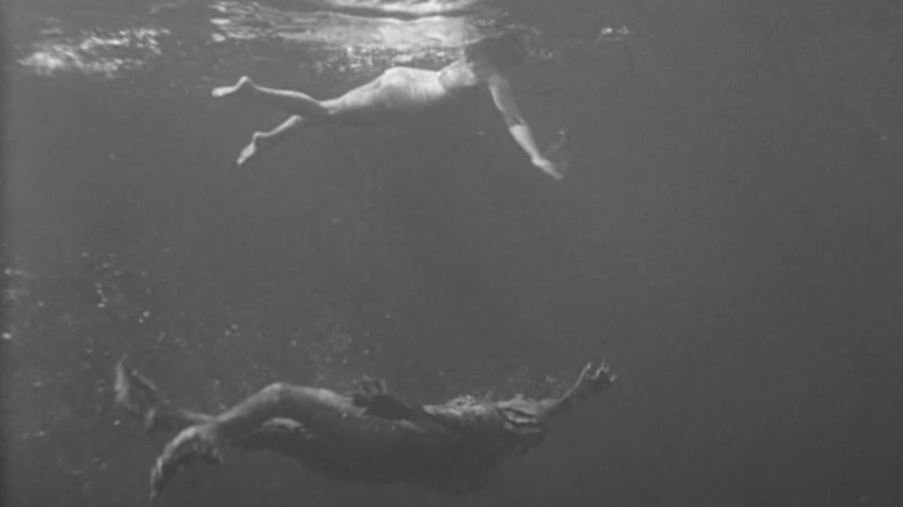
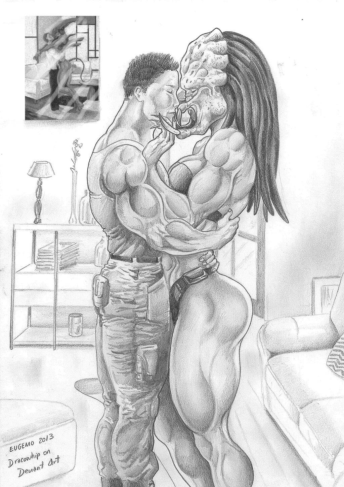
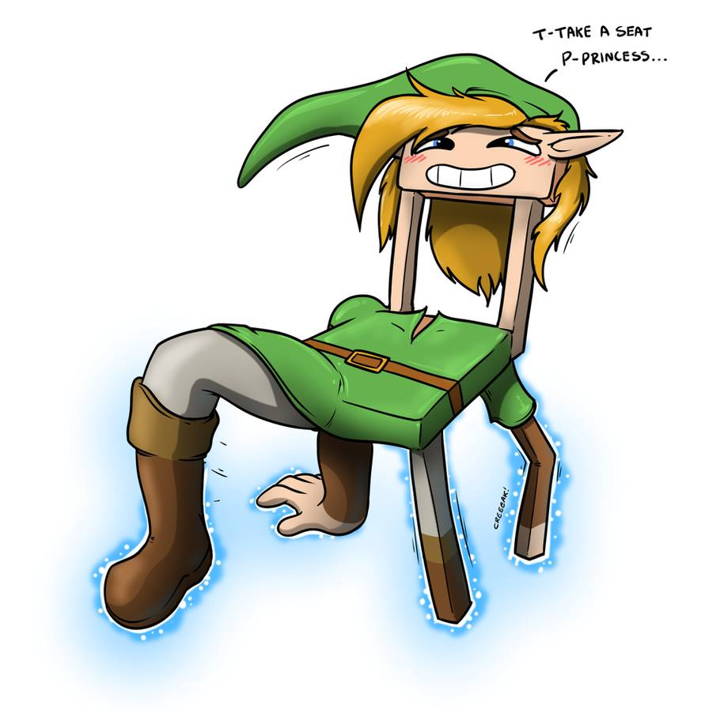
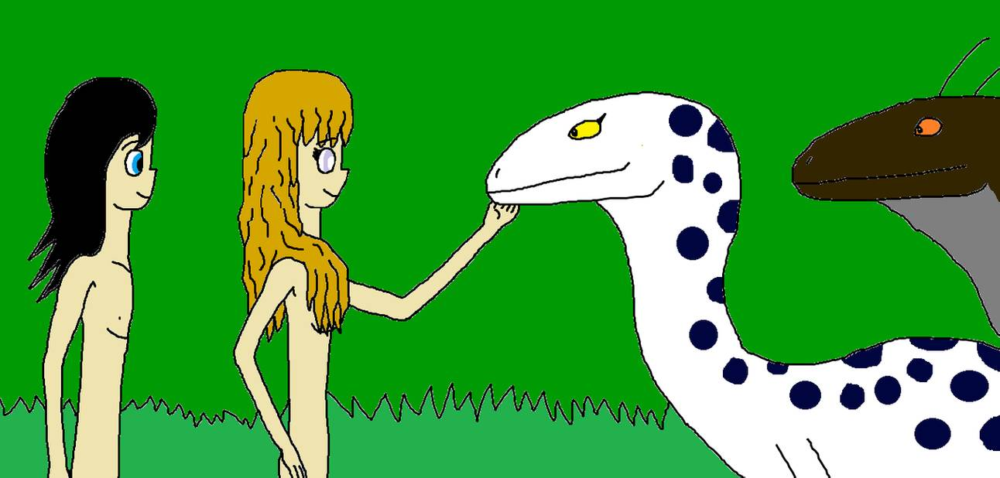

Compost
CHAPTER 1
GLOSSARY
Deviants
The term for users in the online community DeviantArt, a platform for sharing artwork, videography, photography and text. Since the website’s launch in 2000 its shared content has become more focused on the overlapping genres of fan-art and fan-fiction, fantasy character design and amateur erotica.
Fan-art
Artwork created by fans of a work of fiction or of famous real-life personalities. Fan-art samples elements of the fictional universe in question, often being a character, and translates it in imagery as a tribute or to imagine alterations/additions to the original storyline. As fan-labor, fan-art can be commissioned by others within a community of fans, but is not endorsed by or affiliated with the creators of the original fiction.
Mutuals
This is a term originating from Tumblr, referring to users who mutually follow each other’s blogs. In a less literal sense, referring to mutuals is a way to address followers who “get it”: since most of the content shared on Tumblr is visual imagery, a mutual is someone with the references and experiences to decode those images in the intended way. These experiences could for example be the experience of being queer femme or being really into certain 80s Japanese anime.
Blue’s claws rest in front of her, allowing her to shift her shoulders forward, popping the collarbone. Leaning on something draped, her knees and ankles are close together. The legs are positioned reminiscent of English ladies sitting sidesaddle on a horse for modesty. However, modesty doesn’t agree with the slight arch of the back, her knowing booty tooch1, ending in a strong, playful tail ready to whip. “I just felt it inside me that sometime you would do a muscled sexy anthro version of the velociraptor from Jurassic World.” Universal85 expresses in the comment section below the image of Blue posing. The artist replies instantly: “oh, those legs!”.
Blue’s teasing portrait was created by Dracowhip, available to view in his gallery on DeviantArt. When entering their homepage, a mosaic of images appears as they are being uploaded by Deviants around the globe: A woman with rabbit ears lies stretched out on a pink satin sheet, holding a magical device embellished with glowing gemstones; a dragon roars at the sky in flames as meteors rain around it; an adolescent man with horns shooting from his white hair has blood running down his face. Together, the thumbnails make a diverse composition of disconnected styles and stories. However, if you enter an artwork with a click and read through the comments, most visitors seem to know exactly what is going on. Users express support, admiration, even humble pleas for each other: “Can you do one of granny goodness putting wonder woman in a headlock? Or just any one of a strong older woman putting a hot athletic girl in a crushing headlock!”2. There are desires embedded in these images, and on DeviantArt, the creators will likely tell you exactly what they are. Long image captions may expand on entire worlds for those desires to inhabit. Typically, fan-art is submitted along with pieces of written fiction, filling in blanks beyond the image plane. On DeviantArt, this is part of the joy of knowing the online identity of the artist.
On the social blogging platform Tumblr, each user’s page may look less like a gallery and more like a curated masonry of stacked images. They can be directly posted by the creators of the images themselves, or they can be linked and reblogged a thousand times over, often making the original source hard to trace. There may not be a clear relatedness between neighboring images on a Tumblr page. The sense is made somewhere in the space between the images. The overlapping theme in the uploaded content on Tumblr and DeviantArt is rich, imaginative fan-culture and fantasy. Fantasy, first as a genre (anthropomorphic creatures known from fables with magic abilities and battle costumes doubling as lingerie), and second as embodiments of the activity of fantasizing (things imagined), including when they depict more mundane characters. The two senses of fantasy are bridged in this stream of images shared online: desirable, impossible, erotic, maybe kinky, maybe fetishistic…
In fantasy and fiction, transformation is central: zero to hero, child to adult, frog to prince, sorceress to hag… In the sort of imagery described above, the stages of transformation are eroticized repeatedly in online communities. The desired motif is the event of one thing becoming another, captured in those in-between phases. Therefore, I would like to focus specifically on erotic fan-art to keep the attention on the in-between and to investigate its potentials and the desires it reveals and ignites. I sense an importance in these images giving a visual language to things that are otherwise rhetorically elusive. With this text, I build on feminist efforts against dualistic views, and will reference related critical thinkers throughout. As expressed by Donna Haraway: “Certain dualisms have been persistent in Western tradition; they have all been systematic to the logics and practices of domination of women, people of color, nature, workers, animals – in short, domination of all constituted as others.”3 This text celebrates the mess it makes to blur binaries by studying images that eroticize that mess. Not only is it a disorienting joy to look at sexy hybrids in fan-art, it is important simply to investigate why it attracts followers in such large numbers.
Images of erotic fan-art displaying animal-human hybrids are typically characteristic for Tumblr and DeviantArt. However, because of the Tumblr ban of “adult content” (December 17, 2018), explicit examples have migrated to other platforms like Twitter, as well as many smaller communities. To investigate the intent behind my images of interest, I have gotten in contact with three fan-artists whose artworks and statements are represented in my arguments: Darkoshen, FlyingRotten and Dracowhip. Although I use theory throughout to position and contextualize the referenced fan-art within image culture, the interviewed artists direct the study back to the more material premise of the artworks. Their personal testimonies portray fan-art both as community, as pornography and as exploration of the properties of fiction. Since the artists behind these animal-human figures identify as fans, there is something delightfully obsessive about their work’s creation and distribution. The artwork is intricate and made with obvious devotion. The fan-artists are delivering imagination and high productivity to an audience of users, simply because they share their fandom—they get it!
I will make increasingly liberal use of the terms animal, beast and monster throughout this text. In the spirit of giving form and expression to the in-between, I allow them to interchange gradually. I do this while presenting how their categorization depends on unstable binaries. These divisions are destabilized further by their repeated and adored depictions in fan-art online. What are the desires embedded in these images by the artists as they are created, and which of the users’ desires allow the images to be continuously shared, copied and transformed?
When you arch your back to stick out and elevate your behind. The term was introduced to the public as a modeling technique by supermodel and TV personality Tyra Banks in around 2012.↩︎
Comment from Gotititit on June 12, 2019, posted on Blue by Dracowhip on DeviantArt.↩︎
Haraway, Donna: “A Cyborg Manifesto”, page 313↩︎
CHAPTER 2
GLOSSARY ◄ ◄
Animacy
A grammatical and semantic feature expressing in some languages how sentient or alive the referent of a noun is. Animacy designates something’s ability to sense, feel, act, its liveliness or even humanness. This ability is ordered in hierarchies, whereof some are more elaborate than others. Mel Y. Chen argues in her book Animacies: Biopolitics, Racial Mattering, And Queer Affect (2012) that the term animacy has several senses, goes beyond the linguistic into the cognitive, and that its unstable hierarchies themselves animate the world around us.
Transubstantiation
The act of changing a substance, or the character or form of a substance, into another.
Queer
Originally meaning “odd” or “strange”, which today is still true in the sense that queer refers to the non-normative. In widespread contemporary use, it refers to sexual and gender minorities, someone not heterosexual or not cisgender. Beyond that, the sense of the word changes depending on whether you use queer as an adjective (queer), a noun (a queer), or a verb (to queer). In Animacies (2012), Mel Y. Chen argues that the term queer is wildly animate, impossible to fully capture. Chen writes that the use of queer as a descriptive word is inherently, “denotatively perverting”.
In order to understand the kinky power and sex-appeal of a fictional hybrid figure, we must first map out the elements that it is combining. A conceptual separation between human and animal allows for the joyous perversity of the fan-artists’ depictions. This habit of regarding the human apart from the animal is ancient and is therefore treated as inherent in much of modern language and culture. In this chapter, I will be leaning heavily on the words and references of Mel Y. Chen in her book Animacies: Biopolitics, Racial Mattering, And Queer Affect (2012), to briefly present the logic of this distinction and some of the cultural forces that affirm and disrupt it.
Mel Y. Chen first approaches her subject field of animacy linguistically, having first acknowledged that the term has no single or final definition. A hierarchy of animacy orders nouns according to the amount of agency they are perceived to possess. A simple one, functioning in English for example, typically looks like this:
human
animal
plant
mineral
Any such hierarchy can of course be extended endlessly until it encompasses and orders everything nominable. A more elaborate ordering places adults as more animate than children, someone you know above someone you don’t, someone near above someone far away, receptionists above orcas, squirrels above dung beetles, orchids above cheese graters, marbles above phlegm, sunshine above estrangement.4 Languages depend on such hierarchies to be understandable, who does what to whom/what and when. The hierarchies are also available to be shuffled around with figurative intent by the speaker. For example, insult or injurious language will often aim to direct its target lower on the animacy hierarchy. Therefore, with the dichotomy of human and animal so readily present in most people’s thinking, animal figures are weaponized in speech constantly, you pig.
Mel Y. Chen clarifies in her introduction to Animacies: “I build on the feminist insight that ‘nature’ is a feminized counterpoint to masculinized ‘culture’, but also approach ‘nature’ as a complexly differentiated site, gendered, racialized, and sexualized in ways that are not consistent or predictable”.5 In this quote, she presents two important thoughts: You become less of a cultured subject if you are perceived to be ruled by instinct over rationality, and your sexual objectification will likely follow. This idea is echoed and exemplified by Karen/Miranda Augustine, writing about the colonial practices of sexualizing enslaved African women for appearing exotic and “closer to nature”, and how the concept carries over into pornography today:
“The genitalia of selected African slave women—referred to as ‘Hottentots’—was examined in order to prove them a primitive species who most likely copulated with apes … Present day notions of ‘freed’ and ‘open’ sexuality rely specifically on this historically specific interpretation of Black womanhood … Unchallenged racism is reflected in both het and queer smut: Black men are reduced to the size and effectiveness of their penises, while Black, Asian, Latina, Arab and Jewish women are viewed as anomalies, exotic treats and fetishes. Stereotypical notions of a person-of-colour’s body suggest intense sexual pleasure unknown to the vanilla experience.”6
The animal/human hybrid figure is thus culturally linked to people on the fringes, the gendered, racialized and sexualized: cunning and effeminate feline faggots, gorilla men with unruly temperaments only matched by their raging libido, selfish moms having “litters” of kids, etc. The abstract, emotional drives that have been considered to cloud human rationality are imagined transubstantiated, swapped for actual fangs, actual fur, actual harnesses. This becomes even more literal when the principles of figurative language are used in imagery. However, the projected animal features will have very different symbolic value depending on context, especially a sexualized animal figure, which can easily be self-contradicting. One example is cattle. An illustration of a cow-woman can indicate exploitable, domesticated sex-object, unaware of its own huge jugs—at the same time, the bull is culturally a masculinized figure of virility or brutality, barely tame at best. From happy cow-slut to handsomely dangerous minotaur to assertive bull dyke: one species achieves various and opposing figurative meanings, animated by our human ideas of gender and sexuality.
How, then, should we understand the use of animal figures on a website like DeviantArt, where human-animal objects are depicted in such diverse abundance that it creates subgenres of image categories and niches of admirers? These are not your normalized images of a sexy cat-femme with the elegance of a model prancing down a runway; it is a lizard-person moaning ambiguously with erotic promise as if its blood ran warm like ours. The compulsion to constantly project animal experience onto human bodies, as well as human experience onto animal bodies, can apparently result in unpredictable depictions of hybrids that aren’t easily explained with the rigid logic of how insult and discrimination relates to animality. When online communities warp how animal figures are used, are they then playfully chipping away at a previous language of discrimination? Mel Y. Chen herself wonders: “Perhaps instead, the language of transsubstantiation might provide an alternative way to understand how bodies of all sorts undergo regimes of regulation, and also how they resist those regimes.”7
Informed by Mel Y. Chen’s study of animacy, I acknowledge that language and culture centers the able-bodied white male as the universal human, or ultimately the “most human”, and other human bodies around him as hybrid figures—although, with many queer and exciting inconsistencies. Going forward, I will be studying the monster figure as an intense example of an animal-human object. Because what is a monster if not a human shaped animal, devoid of empathy, ruled only by instinct, hunger and desire? (Werewolf, harpy, vampire, mothman, minotaur, medusa, yeti…). Under which conditions is the animal-human, in all its monstrosity, a positive figure? By investigating examples of pop-culture and image culture, I will address that question. I will begin, however, with a monster-archetype, portrayed and sexualized many times over: the fish man.
Figure 4
The post on corporatebigwig/, from April 9, 2019, was later removed, and the original artist is unknown.
The extended animacy hierarchy referenced is based on a language study by John Cherry, which is introduced and utilized by Mel Y. Chen in Animacies, p. 26↩︎
Chen, Mel Y.: Animacies, p. 17↩︎
Augustine, Karen/Miranda: “Bizarre Women, Exotic Bodies & Outrageous Sex”.↩︎
Chen, Mel Y.: Animacies, p. 154↩︎
CHAPTER 3
GLOSSARY ◄ ◄
Monsterfuckers
A term used on social media to describe creators of fanfiction and fanart about sex/romance between humans and monsters. The characters are often gathered from mainstream fantasy, adventure and superhero franchises. The term also refers to the loyal subscribers to said content, who might not be creators themselves. The term is not derogatory and is mostly used as self-identifying.
Paranoid reading
A term described by Eve K. Sedgwick in the essay “Paranoid Reading and Reparative Reading, or, You’re So Paranoid, You Probably Think This Essay Is About You”, published in her book Touching Feeling (2002). One of her central points is to avoid understanding paranoid reading as synonymous with critical thinking, and also be attentive to the reparative intentions of readers of texts and cultures. She illustrates her point with “camp” performance as an example: Parodying, exposing and thereby denaturalising a (gender) construct, is not the only critical practice taking place in camp’s exaggerative language. Sedgwick argues, that there is an additive desire at play in camp performance as well.
Ship
Derived from the word “relationship”. In fan communities, a ship means the pairing of fictional or real-life characters to be in an imagined, romantic relationship. A slash ship specifically refers to a homoromantic relationship between two male characters. Shipping also exists as a verb.
Thicc
Originally written “thick” and used about feminine bodies to express a fondness towards their thighs, butts and waists being full, big and slim respectively. It is also used to describe male figures in different ways, but generally referring to a larger frame and bulky muscles.
I would like to plunge into the swampy terrain of the fish-man figure, as represented in three franchises: 1) “The Gill Man” in the cinema-classic Creature from The Black Lagoon from 1954, 2) “Amphibian Man” in Academy Award winning picture The Shape of Water from 2017, and 3) Prince Sidon from the action- adventure game The Legend of Zelda: Breath of the Wild released by Nintendo in 2017.
Figure 6.1
A cinematic poster for Creature From The Black Lagoon (1954)
Figure 6.2
A cinematic poster for The Shape of Water (2017)
“The Gill Man’s” cinematic appearance is defining for the way swamp monsters are now graphically articulated. In Creature from The Black Lagoon, he is native to his Amazonian habitat and undisturbed by the local population, until a group of US scientists come to investigate his existence. They are very frightened by what they find in the foreign waters. Hence, the first example of fish man fear portrays a colonial anxiety. “Obviously, this is nothing new, this is—dare I say it—a tale as old as time”. With this statement, YouTube-vlogger and cinema fan Lindsey Ellis dives into the rich content of her video upload “My Monster Boyfriend”. In her video, she attempts to explain the thematic “coding” of monster movies, especially the ones based around the pairing of beauty and beast. Ellis explains that the folkloric monster traditionally acts as an embodiment of cultural anxieties, and as such the monstrous figure has historically been representative for the other. In Ellis’ film references, the other is sexually ambiguous, the exotic foreigner, or the dead; the dead decomposing and becoming “nature”, and closeness to nature being the common trait in all monsters. “The Gill Man” first encounters Kay Lawrence, the film’s leading femme scientist-turned-damsel, in his own wet habitat. His agile diving technique is mirroring the female character, who is swimming unsuspecting with her head above water (figure 7). In this scene, “The Gill Man” is literally established as the horrifying “underbelly” of the beautiful South American landscape. There is an undeniably erotic effect coming from opposing beauty and beast. However, in Creature from the Black Lagoon it is just the kinky overtones needed to transfix the audience, the spellbinding concept of being both repulsed and attracted. In the end, repulsion trumps attraction, and there is never any doubt that this monster should be slain by the damsel’s human boyfriend: the monster is other, and we hate it .
Figure 7
Still from Creature From The Black Lagoon (0:25:53)
“Amphibian Man” from Guillermo del Toro’s The Shape of Water (2017) is an obvious emulation of “The Gill Man” from 1954. He is also native to the Amazon and investigated, tortured and hunted by US scientists. The two character designs are similar, although the skin suit of the later version makes him easier to sympathize with as well as desire. Sally Hawkins, the female lead of del Toro’s film, performs this desire. As Lindsay Ellis puts it in her YouTube-upload, what sets The Shape of Water apart from any previous mainstream monster feature is: “He is an anatomically correct fish man and she is super into that”.8
“Amphibian Man’s” skin ornamentally lights up when touched by his human crush, his big black eyes could resemble a child begging, the scales below his “pecs” are easily confused with “chiseled abs”, and he is a music fan (dreamboat!?). This beauty and beast have something important in common: they are both unable to communicate verbally, a central trait making them both marginal to normative society. In fact, every character able to empathize with “Amphibian Man”, and assisting in saving his life and bringing him together with Sally, has a sort of minority experience themselves: hearty Black guardian, lonely gay neighbor, Russian soft-boy academic across enemy lines… It seems that Del Toro, in his film, is dedicated to featuring every one of the subjects put forward by Mel Y. Chen as culturally linked to the animal figure:“As existing scholarship tells us from many different disciplinary sites and, indeed, as everyday language practices also confirm, vivid links, whether live or long-standing, continue to be drawn between immigrants, people of color, laborers and working-class subjects, colonial subjects, women, queer subjects, disabled people, and animals, meaning, not the class of creatures that includes humans but quite the converse, the class against which the (often rational) human with inviolate and full subjectivity is defined. This latter characterization exposes why animals have been so useful as figures, since they stand in for the intermediary zone between human and nonhuman status, and for the field of debate about the appropriateness of humane and inhumane treatment.”9
“Monsters unite! Demand humanness!”, the film exclaims and was heard by a sympathizing Academy of Motion Picture Arts and Sciences in 2018. Thereafter, An Oscar was granted, in the same way as “humanness” is understood as something to be granted. The sexual misconduct of “The Gill Man” in Creature from the Black Lagoon, is replaced in The Shape of Water with the potential of consensual sex between human and beast. Thus, monster-sex becomes the vehicle of only a slightly different moral within an almost identical story: the monster is still other, and it is hated.
The variables in these monster-features are the subject and the audience. While the role of the subject has shifted drastically in Creature from the Black Lagoon and The Shape of Water, the intended audience remains pretty much the same: established film-critics and mainstream viewers. However, the third example of sexualized fish-humanoid, Prince Sidon, has multiple audiences who are not only film viewers.
Prince Sidon was originally dreamt up by the creators at Nintendo and made public with the 2017 video game The Legend of Zelda: Breath of the Wild. In video games, there is an element of role play that allows a player to deviate from their personal moral, considering for example the popular franchise Grand Theft Auto10. However, it is more interesting to investigate the life of Prince Sidon after his release from Nintendo. If you are to believe the fan-art on Tumblr and DeviantArt, he eventually submits to the elfish charms of main playable character Link—sometime after official canon ends. Sidon’s image is sampled continuously as an object of desire within intricate, fan-made illustrations. He is staged in a romantic relationship with Link, engaging in affectionate love-making. Their ship is called Sidlink. The most popular Sidlink-images have been shared and reblogged more than 20.000 times, and artists continue to playfully propose new romantic fictions: what if Sidon accidentally bites Link’s now bleeding lower lip with his shark teeth and cries from regret—but then Link is totally into it and symbolically bites back to cheer him up? What if Link is unaware that Sidon is crushing on him as he gleefully bathes under a waterfall? What if we capture the vulnerable moment when the two first disregard their different anatomies and give in to each other’s kiss—again, and again, and again…?11
While sometimes directly referencing images of earlier fish men in contact with human protagonists (right frame, figure 6 ), the images of Sidlink are generally staged differently. In the still from Creature from The Black Lagoon (figure 7), the lake’s surface is a threshold between the respiring humans and the scaly, conspiring animals below. On the cover of The Shape of Water (center frame, figure 6), that threshold is crossed: Sally is fully submerged, she has given herself over to beast-life, which in the film equals human death. In Sidlink fan-art, the lovers are splashing around in the water, disregarding the threshold, spraying it on each other. It is a limit to be transgressed continuously. They smooch above water like they smooch below. Wet—dry, romantic—platonic, human—beast; their love inhabits the in-between.
It may be clear by now that I don’t care much for the humanitarian efforts of Del Toro’s The Shape of Water. The use of a single beastly figure as an allegory for all second-class citizens seems heavy handed. Besides being part freshwater creature, “Amphibian man” participates in a predictable, heteronormative love story; the viewers are even assured that he can perform penetrative, vaginal sex, since that is the first thing that supporting character Zelda thinks to question.12 While it may be an elaborate gesture to flip the hero/villain relation on its head, displaying the normative white male as the “true monster”, it is just a gesture of negating. Hence, the film is limited to the language of what it is criticizing: the water as a border between human and animal, the fish-man as subhuman, scientific specimen, etc. This kind of negative affect in theory and culture is identified by Eve K. Sedgwick as paranoia.
In her text “Paranoid Reading and Reparative Reading…” (2003), Eve K. Sedgwick presents two positions: the paranoid and the depressive. She explains the paranoid position as the act of looking at culture to expose a wrong perception, a constructed prejudice, a hidden enemy. It is saying “Aha! The white man can be the monster, just look! I will show you, so you know.” Her use of the word position is important because it suggests something to move in and out of. Some situations call for paranoia, however, there is a risk in letting paranoid reading become synonymous with critical thinking. Sedgwick writes: “[Paranoia] seems to grow like a crystal in a hyper saturated solution, blotting out any sense of the possibility of alternative ways of understanding or things to understand”.13 This lack of possibility can be seen in the way del Toro limits the worlds for “Amphibian man” and Sally to exist in: the one where they are persecuted, and in the end one where they are basically dead. For Del Toro’s paranoid criticism to be valid, the characters must be martyred.
In the same way I proposed that the fan-art of Sidlink is an alternative fish-man narrative than in The Shape of Water, Sedgwick offers the depressive position as an alternative mode of reading than the paranoid. The “depression”, in this case, comes from the critical subject being aware of the humiliation they are being exposed to, being affected by it and not actively trying to dodge it. “… this is the position from which it is possible in turn to use one’s own resources to assemble or ‘repair’ the murderous part-objects into something like a whole—though, I would emphasize, not necessarily like any preexisting whole”.14 Could this new whole be a drawing of thicc shark royalty in a loving embrace with his boyfriend? I want to at least propose some erotic fan-art as reparative scenarios made up of parts from past oppressive narratives. Maybe there is something importantly subversive and healing about picking up the figures of humans and beasts like finger-dolls and pushing them together while making kissy-noises.
Even though Images of Sidlink overlap with the wider search tag: #monsterfucker, in Sidon’s own universe he is never made to feel like a monster. He’s a prince and a friend! In the next chapter, I want to dig out an often more sexually explicit example, popular with the fan-art communities. The ship Symbrock springs from the dark superhero franchise Venom. The original fiction sets the stage for imagining the human ravaged by a more despicable figure than the loyal Prince Sidon. Hence, the ship points more directly at fan-art as erotica, and pornographic fantasy as a space for moral negotiation. It will raise questions about sexual desire in general, and whether art driven by horniness can also be productive.
Lindsay Ellis: “My Monster Boyfriend” (01:20).↩︎
Chen, Mel Y.: Animacies, p. 95.↩︎
An action-adventure video game series created by David Jones and Mike Dailly, first released in 1997. The player assumes the role of a criminal in a fictional city in the US, completing quests through shooting, carjacking and robbery.↩︎
Scenarios made up by me. However, they were imagined after thorough research of the variety of Sidlink images abailable online, and therefore loosely based on existing artworks. I encourage the reader to go look for themselves!↩︎
del Toro, Guillermo: The Shape of Water (1:25:30). Sally gestures with her hands how a functioning penis emerges from “Amphibian Man’s” crotch when aroused, using her cupped hands and two protruding fingers.↩︎
Sedgwick, Eve K.: “Paranoid Reading and Reparative Reading…”, Touching Feeling, p. 131.↩︎
Ibid, p. 128.↩︎
CHAPTER 4
GLOSSARY ◄ ◄
AUs & OCs
AU is an abbreviation of Alternative Universe, referring to the imaginary settings in which one or more fan-made characters appear. OC is an abbreviation of Original Character. When a fan-artist’s character is reimagined consistently within an AU, are given a name, elaborate personality, magic abilities etc., they may become an OC.
Bottom(-ing)
The word translates at different levels. The narrowest sense refers to the penetrated person in anal sex between men, countered by the top. It more generally refers to the submissive actor in any sexual practice with more or less explicit power play involved. Andrea Chu Long lends her even broader definition in her draft essay-text “Did Sissy Porn Make Me Trans” (2018): a bottom is passive in their act of desiring, because they hand this act over to someone or something outside themselves. To bottom is also a verb, which means to perform either of the described roles.
Sissy porn
Sissy porn involves a narrator or dominator of any gender, who hypnotizes the male sissy-subject into being feminized and demands him to act as such: wear lacy lingerie, suck cock, be penetrated by sex toys, and be generally submissive. Neither the dominator nor the sissy are necessarily visible: the dominator can take shape as a voice-over or caption placing demands over the video or image, while the sissy can be the viewer themselves, being spoken to directly by the video/image. Sissy Porn is related to the more general bimbofication trope: a subject’s transformation into a “sex-crazed”, blonde and mindless female figure, although many variations exist.
TF/TG Art
Abbreviations of transformation/transgender art. Mostly the artwork depicts stages of transformation of a character on a timeline and is intended as erotica. If the transformation goes from one gender to another it is considered TG art.
“Stop trying to make me fuck humans, it is gross and I won’t” geekandmisandry chimes in as comment to an original post by Argumate from June 23, 2019 (figure 11). The correspondence takes place on Tumblr. It is that special kind of online self-identifying, in which the irony becomes so layered that sincere sentiment somehow emerges from it. The (imaginary?) deselection of romantic relations with humans is represented in a lot of material on Tumblr. Users might not formulate it as a direct disgust of humans, but as an attraction to the non-human or monstrous. Some of these users proudly admit to being monsterfuckers. They warp pop-cultural imagery to express their excitement for various antagonists, beasts and ghouls—placing themselves in the experience of the damsel being ravaged by, or the knight being seduced by, the dragon.
In the incredibly popular monsterfucker ship Symbrock, depressed justice-seeker and human hunk Eddie Brock is paired with the toothy extraterrestrial “symbiote” Venom.15 I hesitate to name the romance a slash ship, since it would be a stretch to gender Venom as male. Canon dictates that Venom’s body is amorphous, like thick glue, and they assume the shape and gender characteristics of whoever hosts them. However, when Venom is depicted in their own form in fan-art, next to or outside of Eddie, they are often presented as a bulky, hyper-masculine creature. Venom is typically depicted as twice the size of Eddie, who himself possesses a rugged, conventional masculinity. The desires embedded in Symbrock fan-art are obviously homoerotic, however abstracted by the literal fluidity of Venom’s body.
Symbrock erotica plays on the blurring of distinctions. On one hand there is the inside relating to Eddie: the human, the self, the rational, the conscious. This is where the audience resides and waits for events to happen. Then the franchise presents the outside, quite literally the extra-terrestrial, the costume, the hunger, the desire. The fan-art depicts moments when the two collide and blend: outside comes in, self becomes other, rationality is willingly given over to mindless desire, repeatedly. The limit between their bodies is transgressed violently as they make love. Venom’s meter-long tongue doubles as necklace and grip. Venom’s mouth wraps around Eddie’s face like a mask as they kiss. Venom’s liquid body wraps around Eddie’s stomach like rope that restrains, embraces, releases, caresses—and ends somewhere we don’t see and can only imagine. Somehow it manages to be heavily explicit pornography without being genital. In simple words, humanness is being fucked.
In Symbrock erotic fan-art, Eddie is generally the one penetrated, assuming the submissive role—a loyal bottom.16 Let’s indulge and investigate what that could mean. When the “top” in a sexual relationship is an amorphous alien without gender, we need to understand the bottom in the broadest way possible. The following definition is borrowed from the essay draft “Did Sissy Porn Make Me Trans” (2018) by Andrea Chu Long, and is offered as an extension to “bottom” simply naming who is penetrated by whom. “By bottoming, I mean what happens when someone or something else does your desiring for you(…)Too often, we imagine powerlessness as the suppression of desire by some external force (maybe someone else’s desire), and we forget that desire, in itself, is often, if not always, an experience of powerlessness.”17 According to Long’s definition, the top can often not be a person, the top can be immaterial. For example, she argues that there generally is a pacifying quality to pornography: porn is the top, you as a user are the bottom, porn takes the reins and makes you act out a desire that it seeded in you. This image is suddenly mirrored perfectly by the image of Eddie’s body both engulfed and entered by Venom (figure 12 and 14): “Desire is talking. It says to bend over.”18 The text proceeds to investigate how notions of bottoming are inherently feminizing and to which degree it’s tied to humiliation as a fetish. Consequentially, it questions how some pornography reproduces the idea that femininity itself is humiliating. I want to propose monsterfucker fan-art as a sort of safe haven for depicting the bottom, then. They are imaginaries where you can be submissive to something you dream up yourself, something shapeless or beastly and queer. In images like these, the bottom becomes less of a gendered “sissy”, because they are not necessarily contrasted by a normatively masculine, or gendered, figure. The bottom is overtaken by a monster, whatever we desire that to be.
I believe it would be missing the point to understand monsterfucker-images purely as a masochistic kink-project, where the viewer gets off from seeing their human representatives obliterated in ecstasy under the weight of a big bad thing. It is more elaborate than just fetish, even though it fetishizes, because it is so narratively extensive. The frequent use of speech bubbles, comic strips and image captions makes monsterfucker fan-art a practice of storytelling. A horny train of thought, materialized with a digital brush, will often branch out into entire universes, eventually to be adopted by other artists. Which stories are they contributing to? How is the fan-art and fan-fiction different from the original canons, from which they sample their characters?
Let’s return to Symbrock as a starting point. The plot of Venom was in fact already loaded with homoromantic subtext, even before the fan-artists had their way with it. In the earliest comics Eddie refers to Venom as his “other” and at times “love” and “dear”, and says sentences like “the symbiote make me feel things that no woman could”. Symbrock is canon!19 Hence, there is lots of material for the monsterfuckers to go crazy over. It explains why Symbrock is jokingly mentioned as a gateway ship, the entry point for many baby monsterfuckers: “Me: I’ve loved venom since I was a kid I’m not a monster fucker that’s gross; Me, watching venom catch a smoke bomb in his mouth: ohH fUCk”20 However, the 2018 film adaption, which most of the Symbrock fan-art is referencing, suddenly focuses on the moral arc of both Eddie and the Symbiote halfway through the film. Thus, it shifts the story away from their relationship to each other. Just as Venom is established as a superior species unbothered by human scale and ethics, only driven by his insatiably hunger, he is somehow inexplicably neutered. Suddenly, he cares. Mel Y. Chen writes about animal figures either as neutered or feral: “The notion of feral also brings up ambivalent identifications with anti homes, since it both rejects the domicile and reinvigorates a notion of public shelter (…) Indeed, the homed feral figure also appears in my text as the sign of a biopolitical (nationalized) demand for population control”.21 Without the romance and sexual desire between the characters made explicit, Venom simply submits to Earth’s order as some sort of fatal consequence. He transitions from feral to neutered just because. Mel Y Chen’s mention of neutering as population control also resonates with Venom’s fate: he agrees to only eat the bad guys, not to mess with the balance of human existence, and he ties himself to one home, on Earth with Eddie. On top of that, he agrees to act as wingman in getting back Eddie’s human girlfriend. Domesticity is saved!
However, Venom hasn’t necessarily grown a conscience in Symbrock fan-art as opposed to in the film. He is just in deep, selfish, passionate, horny love with Eddie Brock. And if Eddie depends on Earth to survive, to stick around as his boyfriend/vessel/fuck-toy means that Earth will be spared by Venom. The fact that Venom’s feral nature stays intact in these images, allows for Eddie to be depicted and identified with as equally desire driven and non-rational.
Disregard of a moral arc in stories is a recurring trait in monsterfucker fan-art. It doesn’t make much sense to talk about moral development when the characters are plucked from their linear storyline and placed in endless loops of love and lust. Remembering the image (figure 8) of Prince Sidon and Link embracing each other in the water’s surface, none of them look like they are about to save any innocents or restore order to the world. They are made to look content—and occupied! The illustrator and highly productive fan-artist Camille Cailloux, username FlyingRotten on social media platforms22, goes deeper into this theme and actively uses the amorality as the basis for her character “The Hedonist” (figure 16). The character was first introduced with the captions: “The Hedonist is a strange creature who indulges in ALL the pleasures life could give. (And that includes terrible stuff such as KILLING)(…) He’s also free of human moral so don’t even try to tell him that what he’s doing is wrong. He’d laugh and prob eat your eyes.” In Camille Cailloux’ gapingly porous universe, The Hedonist gets to be the monster that Venom doesn’t. He is a beast that acts according to his desires always, however contradictory they may be, and obviously, an object of contradicting desires as well: to be held, to be eaten, to be wanted, to be wasted…
The Hedonist shares his facial features with many of Camille’s characters: those of actor Mads Mikkelsen. The following are excerpts of an interview with Camille Cailloux/FlyingRotten conducted by me on her fascination with Mads, how it informs her art and her opinions on the distribution of sexually explicit art online.23
FlyingRotten:
Ah, MADS. Honestly before Hannibal (NBC series, 2013) I had no idea who the guy was lmfao (abbr: Laughing My Fucking Ass Off). I immediatly fell in love with the strange features of Mads Mikkelsen, his face was completely inhuman. Full of sharp angles, skull, eyes, full lips… I started to draw fanarts because i wanted to draw his face more than anything, haha.
The Hannibal fandom made me ship other Mads characters with Hugh’s characters. I don’t know how they managed that. Like, you pick that Mads character from this movie and let’s ship him with this Hugh’s character from another movie LOL (abbr: Laughing Out Loud). When Men & Chicken (film by Anders Thomas Jensen (Mænd & høns, 2015)) came out, I fell in love with Elias, played by Mads Mikkelsen. Like, deeply in love. So, I looked for ship with him and someone had written something about Elias and Adam Towers—played by Hugh Dancy in the movie Basic Instinct 2. Adam Towers has like, a very minor role in the movie so we don’t know much about him but we created a personality and all that shit, so we can ship him with Elias. It gave the name of the ship Basic Chickens: a mix up between Basic Instinct and Men & Chicken. I drew them a lot. Normal at first. Then I turned them into anthropomorphic creatures.
My Basic Chickens art and head-canon are basically how I’d love a relationship but because I don’t wanna suffer IRL. (abbr: In Real Life) I just imagine it. There’s LOTS of Basic Chickens AUs (abbr: Alternative Universe) now. There’s not only the Minotaur version, there’s also the Summer Love AU, the Hangman and Minstrel AU… etc. There’s not one universe for them in my head, they could exist in any universe, any situations I could imagine.
Me:
What do you mean, you don't want to suffer IRL?
FlyingRotten:
I had lots of… bad experiences IRL. I find it safer to just fantasize and I’m actually not frustrated in any ways doing that. Friends are super important for me IRL. As for romance or sex… no thanks. I love to imagine it, draw it, but I don’t wanna live it IRL anymore.
Art could be a good benefit for people. I drew very trash stuff when I was with my ex because I was abused. And this was a way of expressing my pain without hurting anyone IRL. A way of gaining control again.
Me:
But today, I don't see a lot of these themes you mentioned earlier, non-consent and so on, in your work.
FlyingRotten:
Nope, because I don't need to draw that now. I took control back.
Camille Cailloux goes on to describe being kept awake at night by the rush of ideas in her mind, of scenarios where these familiar faces can play out the unfamiliar. Her practice, giving her a substantial following and recognition from fans and illustrators online, is becoming an intricate tapestry of imaginaries: diverse roleplays of transformative personalities, power relations, gender expressions, and species. She strongly insists on her right to fantasize without constraints, moving to whichever platform is not censored yet. At times, she depicts violent sex to the level of gore, only to next contradict it with teary eyed scenarios, delicate snuggles in flower crowns: same faces, same names, desires originating from the same person.
The artist Eugenio Vidal, Dracowhip on DeviantArt, also creates works from fantasies that need several universes to play out. The characters who inhabit his gallery are tall, muscly females, rock hard thighs bulging with force and agency. Most times they are contrasted with a more fragile character, like a smaller woman or a generically skinny man in a shirt. The dominant females in Dracowhip’s art are fluidly depicted as human, alien, reptile, furry, feral and domesticated.
Dracowhip:
I realized it had to do with the natural sensuality of certain creatures and how the anthropomorphic version could represent that. Like a symbol …a token of some kind. Something not possible…like a forbidden fruit that never could be touched, except by the fantasy. I applied that to the “Alien”(from the film series Alien, first by Ridley Scott, 1979) and “Predator”(from the film series Predator, first by John McTiernan, 1987). Who could find those creatures sexy? But I did and I think my versions appealed to many…at least, I hope so.24
Figure 19

Be my lover by Dracowhip on DeviantArt
Published September 26, 2013, with the text:
“...The Huntress looks and really is strong too, but she is in love with the guy and never notices, or simply doesnt care about the framed photo in background. Is it the same guy? Maybe a friend who enjoys to conquest sexy monster girls.”
Dracowhip has around 24.000 watchers on his DeviantArt page and nearly 333.000 page views. Their excited remarks in the comment section under his work suggests a supportive and loyal base of admirers, often engaging in writing additional, collective fiction to the images. “Me at Area 51 when I find out alien women are more loyal than these Earth-hoes”, TheAncientWafl writes in a comment from July 13, 2019 on Dracowhip’s work Forbidden Kiss: Xeno Girl. Somehow, the comment echoes the hurt expressed by Camille Cailloux when explaining why she lives out her sexual desires only in her art. TheAncientWafl’s comment, however, is misogynist in a way that I find hard to dismiss. I brought this up in my conversation with Eugenio Vidal/Dracowhip.
Dracowhip:
Well… maybe girls have been a bit too hard on the poor dude…hehe. But seriously… I think some people are eager to discover new emotions, something more challenging and maybe have no idea how to…except in fantasy…and some frustrations could arise too. If I could do something to make people fantasize, in a healthy way, well… I think I’m doing cool hehe.
I think everything can be done in fantasy, and not all that is good, unfortunately. My ladies are intended to give fun and joy in a fantasy setting, there are even many ladies who enjoy my girls and are followers. They see them as funny characters. Of course, you can’t control people and there are many out there that have twisted ideas.
Eugenio consistently explains his work in the same laidback manner. He is unbothered and simply into buff women, also scaly ones. He fails to recognize his female followers as possibly viewing his work with erotic desire and not for amusement, despite the high amount of lesbian love scenarios in his gallery. However, there is no doubt that his own intent behind the art is to depict “feminine force” as physical strength (transubstantiation), because that is appealing to him. With every fantasy, and therefore also every image, there may be a displacement between intent, reception and use.
The Deviant Darkoshen works with both his own and others’ fantasies when he creates. He does not necessarily extend the universes of his characters after they are portrayed for the first time, and he does not work with typical monsterfucker-references. However, transformative bodies and queer, interspecies existence and sexuality are his key motifs. Darkoshen introduces himself as a maker of tg/tf art (transgender/transformation art).
Darkoshen:
My General Audience is mostly fetish fanatics who commission me to create art for their enjoyment. They might fantasize about changing gender and transitioning in real life but their circumstances might not allow them. Or they just like to see Mickey Mouse (cartoon character created by Walt Disney and Ub Iwerks at the Walt Disney Studios in 1928) turn into a hot bimbo, and vice versa, because that’s what gets them off.
Me:
How do you deal with depictions of consent, and non-consent, in your art?
Darkoshen:
Consent is a slippery slope in regards to tf/tg art. There are people who turn themselves into other beings in their own terms, usually randomly or by an artifact. They might just change form or change mentally as well. This is usually known as “character death” since the original person is gone and replaced with another being.
In my pieces, when people who commission me they often include themselves in the mix. They might project themselves into the character on the page that turns into a princess and marries a buff prince. But they are not princesses and there’s no prince, it’s just an idea in their head that fills them with happiness. Transforming a man into a woman by the flick of a brush tool is fantasy. Fantasy by definition is imagining things that are impossible or improbable. I make those fantasies come true through my visuals. Isn’t it all right to fantasize for a bit?25
The image of a masculine figure turning into a female one has different names and search words online. If he is transformed into a sex-crazed blonde with big tits typically in a thong and needle-sharp stilettos, it is called bimbofication. Another kink surrounding such transitions is sissy porn, both referring to the feminization/castration of the viewer as well as the actor or character. It is the same genre that thematically opens the previously referenced text by Andrea Chu Long, “Did Sissy Porn Make Me Trans”. If we again turn towards Long’s definition of a bottom, then the art by Darkoshen is related to the fan-art of monsterfuckers. Even though Darkoshen’s images often don’t depict a sexual situation between two or more creatures, the character is being subjected to the desire of something outside itself; some external actor transforms not only its body but highjacks and changes the character’s own desires and behavior. The depicted subject is pacified, even when it isn’t feminized—which it is in most cases. Once more, the subject we are left to project onto is a bottom. Again, “Desire is talking. It says to bend over.”26
It is now established that the medium of fan-art offers a stage for the monsterfucker to materialize, the ones who bottom for imagined beasts and despicable creatures. Their narratives are afterwards available to be built upon through reblogging, copying and collective imagining. As testified in the interviews by FlyingRotten, Dracowhip and Darkoshen, the drive behind the monsterfucker fan-art (and its relatives) is to give form to fantasies, both as escape, communion and to get off, not to get closer to a true representation of any existing reality. I want to proceed by investigating how the positive effects of these images go beyond the value of representation—beyond it being enlightening to see yourself get fucked by a beast every once in a while, and to learn that some people just like that stuff. The question then becomes what are fantastical stories and images, when they no longer act as allegories, but become material, taking space in the world and making noise online?
Symbrock springs from the Marvel Comics character Venom, first appearing within the Spiderman universe in 1984. However, today’s fan-art is mostly based on the 2018 film adaption Venom, with Eddie Brock portrayed with actor Tom Hardy’s features. Consequentially, Tom Hardy himself has become a popular object of desire within associated online communities.↩︎
There are exceptions to Eddie being the penetrated in Symbrock erotica, however these are less prevalent. Often, such examples are specially tagged with #BottomVenom, and some users express strong preference to Venom as bottom over Eddie.↩︎
Long, Andrea Chu: ”Did Sissy Porn Make Me Trans?”, draft for Essay↩︎
Ibid.↩︎
Many more examples of the romantic nature of the relationship between Eddie Brock and Venom are referenced in the Reddit discussion “Is Symbrock Canon?”, also countered by arguments why the romance is only suggested and never confirmed.↩︎
A text post meme originally posted on the Tumblr here January 18, 2019↩︎
Chen, Mel Y.: Animacies, p. 19↩︎
FlyingRotten displays her fan-art on Twitter (explicit content on a separate account @nsfwingrotten), Instagram and Tumblr (Now inactive, but still displaying previous work)↩︎
The interview was conducted online via text messaging on October 28, 2019.↩︎
The interview was conducted online via text messaging on October 13, 2019.↩︎
The interview was conducted over text, partly on DeviantArt, November 15, 2019.↩︎
Long, Andrea Chu: ”Did Sissy Porn Make Me Trans?”, draft for Essay.↩︎
CHAPTER 5
GLOSSARY ◄ ◄
The thing that feels
A philosophical idea presented by Mario Perniola in his book The Sex Appeal of the Inorganic (2004). The idea of “the thing that feels” disrupts the dichotomy of the (sentient) subject and (insentient) object. It is described as being most clearly demonstrated in erotica and sexuality. A person rendered as “a thing that feels” could for instance be the sexually objectified person: someone becoming an object because their agency is clouded by their or an other’s desire, not performing actions but behaving predictably. Someone “feeling” and having an intense sentient experience, but not an experience that can be called subjective.27
Children of compost
Derived from the name of chapter 8 of Donna Harraway’s book Staying with The Trouble (2016), “The Camille Stories: Children of Compost”. The chapter is intended as a speculative fabulation that envisions a future community, dedicated to nurturing each other and the endangered creatures it exists amongst. Harraway proposes the scenario as an alternative storytelling, necessary for a livable future on earth. In the film Storytelling for Earthly Survival (2016) Harraway mentions this writing and references the characters in it as “children of soil”—characters of non-action.
Figure 22

The TF Adventures of Link—Chair by Redflare500 on DeviantArt
Published on May 19, 2016
Looking at the fan-art of monsterfuckers, the sometimes-gory images of ecstatic human figures taken apart or fully occupied by the desires of a beast, I have chosen to engage in different ways. Motivated by my own desire and curiosity, I had initially engaged as a user. Signing up to new platforms, subscribing to content and adding to favorites, has revealed new experiences possible for me to project onto. Additionally, I have reached out as a researcher to gain knowledge about the creators. It proved an easy task since the contact between artist and user is frequent and normal, and the line between the two is blurry: it takes a fan to truly cater for fans Their testimonies are personal; their motivations are introverted. To be able to put these striking fantasy images into perspective in the world beyond the platforms, I have turned to philosophical theory that deals with notions of the subject, storytelling, animality and gendered bodies. In the following paragraphs, I would like to share some overlaps between themes in monsterfucker fan-art and theory that I find both encouraging and important. However, I insist that they are suggestions only, and should not be understood as expressions of definitive truths.
Studying the transformation art of Darkoshen on DeviantArt, for example when depicting a character transforming from man to cow-woman (figure 20), I am reminded of Deleuze and Guattari’s philosophical idea of “becoming-animal”.28 The term expands on the event of becoming, not the shift from one identity to the next, but rather the deconstruction of fixed identity. The term represents a mode for understanding the emancipatory effects of becoming a less subjective figure, in this case animal, in the same way fan-artists both sexualize and celebrate a movement towards objectification. For example, in Darkoshen’s art, the viewer is similarly presented with all stages of such transitions: the erotic appeal lies in the becoming, linear yet endless. What about Symbrock? Eddie is human and he is desired by Venom for exactly that reason. When Venom’s fluid body wraps around and inhabits Eddie, he is not becoming animal as much as he is becoming Venom and becoming not himself. Besides animal-humans, Deleuze also fittingly writes about gooey, abstract bodies, which might as well look like Venom’s if illustrated. Deleuze’s idea of a “body without organs” again aims to deconstruct the subject. It is the idea of an unordered body without the hierarchy of parts and raises the question of how to even distinguish such a body from others around it.29 If bodies were thought of like this, a person can’t be imagined as one agent mind contained within one body. A person is then conditioned by everything and everyone around it because it is basically part of everything. In the same way, when Eddie and Venom are depicted having sex, the limits between them dissolve, objectifying them both. Their desires become each other’s and indistinguishable. In the most explicit fan-art, the bodies of the imagined monsterfuckers pour into their surroundings as blood, saliva, semen, nuclear slime, acid goo, yet they are still intact and moaning in pleasure.
Deleuze’s and Guattari’s ideas help illustrate when objectification is both “sexy”, desirable and necessary. While they can help to understand some of the appeal of monsterfucker fan-art, intellectualizing these images comes with the danger of obliterating them. The magic of the monsterfucker fan-art lies in its frivolousness towards the fantasies it is born out of. The images are left hanging online, unexplained, unapologetic, and if you are a little bit turned on by viewing them, you give yourself away. The artworks are only justified by the fact that they are desired. This does not mean that fantasies are inherently harmless. Perhaps the danger of a fantasy is minimized if you can acknowledge its impossibility, that the image in front of you is not supposed to represent a reality. Guattari’s and Deleuze’s thoughts can mostly be used to understand the depictions of bodies in monsterfucker fan-art, but not necessarily the obsession with making fan-art like this in the first place. I will proceed by investigating this question and storytelling and image-making as mediums.
The practice of fan-artists is to pick characters from their epic, original storylines and make them perform alternative scenarios of disgust, empowerment, humiliation, affection and romantic love. Fan-artists make fictions of other worlds with the materials of this one. I argue, that the monsterfuckers are creating stories that agree with science fiction and fantasy writer Ursula K. Le Guin’s sentiment in her essay “The Carrier Bag Theory of Fiction”: “(…)we’ve all heard all about all the sticks and spears and swords, the things to bash and poke and hit with, the long, hard things, but we have not heard about the thing to put things in, the container for the thing contained. That is a new story. That is news.(…) Hence it is with a certain feeling of urgency that I seek the nature, subject, words of the other story, the untold one, the life story.” Le Guin advocates for fiction shifting from stories of the spear-bearing hero to stories about a more collective effort of nurturing, people instead armed with receptacles for gathering and distributing. In monsterfucker fan-art, we are presented with that different story. The characters may not be harvesting with pouches; however, the subject does shifts from performing with the “long, hard thing” to themselves being a receptacle: a bottom!
The heroic tale (“the killer story”, Le Guin calls it) is being dismantled by having the knight meet the dragon in an affectionate embrace. The portrayed love-scenarios between the man and monster consume all the attention of both characters and viewers, time stands still and there is a sense of historical context being washed away. It seems counterintuitive that a human figure would get lost in the yellow eyes of a sea-creature. There is no clear moral to derive from it, and therefore it doesn’t represent or support actions of expansion, overcoming, siege, discipline, or loyalty to nation. The knight gives in with no regrets, the dragon receives them with gusto. Donna Harraway, known to be a fan of Le Guin’s writing, echoes her wish for alternative storytelling. In the film Storytelling for Earthly Survival (2016), Harraway expresses how crucial it is to make new fictions featuring characters more aligned with the “wimps and klutzes” of Le Guin’s essay. Harraway refers to such characters as “children of soil” or “of compost”.30 To put it simply: “The hero” is inherently not careful. A “child of soil” is able to provide care for the earth and others, because they are not hung up with being a praised subject. They offer their bodies as material for nurturing and become objectified. They collectively participate in the compost.
The image of compost, the metabolist recycling of material and energy by degrading into warm mush is somehow fitting for how fan-artists operate. Images of heroes, villains, sidekicks and distressed damsels are picked apart for their delicious bits, chewed up, savored and excreted in a reordered and fragmented form. They are served proudly for the next user to dig in. “Images are violated, ripped apart, subjected to interrogation and probing. They are stolen, cropped, edited, and re-appropriated. They are bought, sold, leased. Manipulated and adulated. Reviled and revered. To participate in the image means to take part in all of this.”31 In her essay “A Thing Like You and Me”, Hito Steyerl speaks about looking at images not as representations of reality, that you can either subscribe to or disagree with, but material fragments of reality. In this sense, all images are somehow truthful as “animated by our wishes and fears—a perfect embodiment of its own conditions of existence”. Steyerl goes on to advocate for “siding with the object”, not the hero, again in a similar vein as Le Guin, by referencing Parniola’s “The thing that feels”32 : “A desire to become this thing—in this case an image—is the upshot of the struggle over representation. Senses and things, abstraction and excitement, speculation and power, desire and matter actually converge within images.”33
I see fan-art having a role in this new image-materialism, being just what they are, instantly gratifying erotic tools and not symbolic representations. Monsterfucker fan-art has a role because:
The fan-made image is a thing (not a representation of authentic reality).
The monster is a thing (no longer a representation of a class, race, gender…).
Through its submissive depiction the subject becomes a thing (not a hero, not a human, rational subject).
In that sense, monsterfucker fan-art is objectifying threefold and it is inviting you to participate: with your art, your witty comments, your meme-making skills and your horniness.
And finally, I believe fan-art has value politically, besides the potentially liberating/oppressive qualities of its erotic portrayals. As evident from my correspondence with fan-artists, they don’t appear to make their art in revolt or to be transgressive. Therefore, the politics of monsterfucker art isn’t explicit or available to be interpreted in its visual symbols. To that, Hito Steyerl makes a very useful point in her essay about the queer porn film Raspberry Reich (2004) by artist Bruce LaBruce:
“(…)the point is not to be found in the gayness or pornness of the film, and certainly not in its so-called ”transgressivity.” The point is that the actors do not identify with heroes, but rip their images. They become bruised images: sixth-generation copies of dodgy leftist pinups. This bunch looks much worse than David Bowie, but is much more desirable for it. Because they love the pixel, not the hero. The hero is dead. Long live the thing.”
Monsterfuckers love things. Toothy things, soft things, strong things, fleshy things, image things. Their artworks are things and we become things looking at them. The role of the image is changing with new tools of distribution and the monsterfuckers are not only adapting to it, but thriving or maybe even causing it. They and their likeminded fan-artists are willingly giving us all a slide down the animacy hierarchy. They obsessively indulge until these potentially discriminatory parameters of subjectivity, rationality and victory become so unstable that they don’t apply anymore. Their mutated memory is still essential for the sex appeal, though. In all this smutty disarray of monsters loving men, where the desired is inverted and reestablished only to be decomposed again, I believe the soil is rich for new erotic logics to sprout.
Figure 25

Jurassic Paradise Jenna meets Knun’s family by Syfyman2xxx on DeviantArt.
Published April 1, 2015, with the text:
"Knun shows his girlfriend/mate Jenna to his adopted family of velociraptors. She was fascinated to see his beautiful mother Blue Dot as she too was amazed to see a beautiful human girl that her son is in love with."
For a generous review and break-down of Mario Perniola’s The Sex Appeal of the Inorganic and his term “the thing that feels”, you can visit the blog of American philosopher Steven Shaviro “The Pinocchio Theory”↩︎
"Becoming-animal” is introduced as a term in an essay of the same name within the book A Thousand Plateaus: Capitalism and Schizophrenia (1980) by Gilles Deleuze and Félix Guattari.↩︎
Gilles Deleuze first introduced “body without organs” in his book The Logic of Sense (1969). It was thereafter frequently used in the vocabulary of Capitalism and Schizophrenia (1980) by Deleuze and Félix Guattari↩︎
Storytelling for Earthly Survival (0:35:30)↩︎
Steyerl, Hito: ”A Thing Like You And Me”, e-flux, journal #15↩︎
See glossary for definition and reference.↩︎
Steyerl, Hito: ”A Thing Like You And Me”, e-flux, journal #15↩︎
INTERVIEWED ARTISTS
Cailloux, Camille. @flyingrotten on Instagram, @CamilleCailloux and @nsfwingrotten on Twitter
Darkoshen on DeviantArt
Vidal, Eugenio. Dracowhip on DeviantArt
LITERATURE
Augustine, Karen/Miranda: “Bizarre Women, Exotic Bodies & Outrageous Sex: Or if Annie Sprinkles Was a Black Ho She Wouldn’t Be All That”, Border/Lines, issue 32, 2016
Benjamin, Walter: Selected Writings: Volume 1 1913-1926, ed. Marcus Bullock and Michael W. Jennings, London: The Belknap Press of Harvard University Press, 2002
Chen, Mel Y.: Animacies: Biopolitics, Racial Mattering, and Queer Affect. Duke University Press, 2012
Chu, Andrea Long: "Did Sissy Porn Make Me Trans?" (2018). Retrieved from here on 14-06-2019
Haraway, Donna J.: A Cyborg Manifesto: Science, technology and socialist-feminism in the late twentieth century. David Bell and Barbara M. Kennedy, The Cybercultures Reader, London, 1984
Haraway, Donna J.: Staying with the Trouble: Making Kin in the Chthulucene. Duke University Press, USA, 2016
Perniola, Mario: The Sex Appeal of the Inorganic: Philosophies of Desire in the Modern World. Continuum; first edition (March 26, 2004)
Sedgwick, Eve K.: Touching Feeling, “Paranoid Reading and Reparative Reading, or, You’re So Paranoid, You Probably Think This Essay Is About You”. Duke University Press, 2002
Steyerl, Hito: "A Thing Like You And Me”, e-flux, journal #15, 2010.
FILM
Arnold, Jack: Creature from the Black Lagoon, 1954
del Toro, Guillermo: The Shape of Water, 2018
Fleischer, Ruben: Venom, 2018
LaBruce, Bruce: The Raspberry Reich, 2004
Terranova, F., Marcon, G., and Landini, M.: Storytelling for Earthly Survival, 2016
VIDEO(-GAMES)
Benzies, L., Sawar, I., Jones, D., Lashley, S., Thomson, B.: Grand Theft Auto, Rockstar Games, Take-Two Interactive, Capcom, and more. First release 1997, latest release 2013.
Ellis, Lindsey: “My Monster Boyfriend”, Lindsey Ellis on YouTube, March 2, 2018
Toda, Akihito: The Legend of Zelda: Breath of the Wild, Nintendo, 2017
Hot Monster Compost Bachelor thesis by Nicolai Schmelling Royal Academy of Art, The Hague Graphic Design department 2020
Guidance and supervision
Merel Boers
Design Supervision
Thomas Buxo and Silvio Lorusso
Editing and proofreading
Sharon Mountain
Special thanks to
Anastasija Kiake, Anton Juul, Cæcilie Benth Bang, Feline Hjermind, Nicholas Riis, and Marcel Miranda Ackerman.
Thank you to the artists Camille Cailloux/FlyingRotten, Eugenio Vidal/Dracowhip, and Darkoshen for agreeing to be interviewed by me so openly.